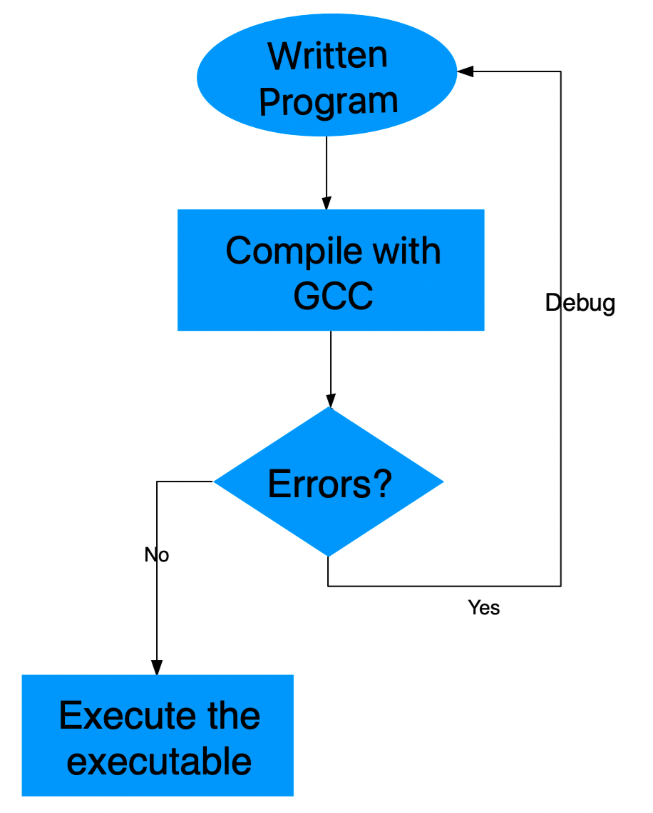

We write computer programs to solve problems. We begin with solving made-up academic problems for starters, and gradually ramp up to problems of higher difficulty. We nurture the skill of problem solving using computers in hope that one day we may be able to solve a problems that no one else could solve and that's probably when we can say our learning has come to fruition.
Instead, can't we just yell and command the machines to solve problems?
We so wish we could! But unfortunately we don't have programs intelligent enough to understand problem statements (in a language like English), analyze them logically, and also come up with solutions. Although we see programs like Alexa, Siri and Google's voice assistant attempting to do this, we should keep in mind that they are only programmed to pretend like they understand human language. Their abilities in reality are severely limited. These seemingly intelligent programs have still a long way to go before understanding human language with all its subtleties. Fact is we still haven't been able to design programs that can undertake creative tasks such as proving theorems and solving problems. In fact, we don't even know if we'd be able to do it in the future. Therefore, commanding a computer vocally to solve arbitrary problems is too far fetched. At least until that is achieved, we have to write programs in a programming language - that is, a language computers can understand to solve problems.
How is a programming language different from a natural language?
Loosely speaking, they are not all that different. Except that a programming language is too simple for a human mind to express freely. Also, unlike English and other naural languages the grammar of a programming language is extremely simple and vocabulary is ridiculously restricted. As a matter of fact, the words seen in the below table are all the words that are officially part of C langauge. Which means any C program we write only consists of these 40 words along with the names we create and a small set of symbols. And the entire grammar of a programming language can be fully specified in less than a couple of pages (check this: C grammar and this: Python grammar). When you compare this with volumes of books written on the grammars forof languages like English, French, Telugu, Tamil etc. you realize what we mean by saying programming languages are too simple for humans. For someone who's learning to program this may feel restrictive, but eventually one gets used to it.
Vocabulary of C programming language (alphabetic order)
auto
break
case
char
const
continue
default
do
double
else
enum
extern
float
for
goto
if
int
long
register
return
short
signed
sizeof
static
struct
switch
typedef
union
unsigned
void
volatile
while
What is a computer program?
The process of solving a problem on a computer roughly goes through the following steps:
At first you have an intuitive idea of how to solve a problem - a precise step by step procedure by which you may attain the solution.
For example: Imagine you want to find the roots of the algebraic expression
First, you identify it as a quadratic expression.
Second, you write in the form of increasing order of degree of as:
We assign values to the variables as and evaluate the values
This precise step-by-step instructions to solve a problem is also called an Algorithm.
We create a text file (eg: quadraticSolver.c) in which we express this step-by-step procedure in a programming language. This text file - a set of instructions written in a given programming language - is what we refer to as a computer program or the source code..
We then feed this text file into an already existing program called the compiler which takes the pain of doing the following two things:
Checks if the instructions written in the text file follow the grammar rules of the language. If there any grammatical errors, it will complain and stops the compilation process.
Converts these instructions to a machine level code stored in a file called the executable.
Finally, as the last step, when we execute the executable the CPU performs the logical operations to complete the process of computation. This executable file is specific to a processor (Intel/AMD, version etc) and operating system and may not work on someone else's computer.
In this entire process, creation of the computer program in step 2 is the most crucial part and that's what keeps us busy as programmers.

When a compiler rejects a syntactically wrong program, you dutifully go back and correct the program. This process is called debugging.What happens if my algorithm is wrong?
When you think you have a solution to a problem, you better have a solution that is correct! If your solution is wrong, naturally you face undesired consequences.
An algorithm has to be correct, and the onus is on you to make sure it is correct. When you claim you have a solution to a problem, is it not your responsibility to present a step-by-step procedure to solve it? Even if you borrow the algorithm from someone, it is your responsibility to check if it is correct before implementing it as a computer program.
A ridiculous example of a wrong algorithm!
Fact 1: If you have a correct algorithm you should be able to implement it in any programming language. This implies that there doesn't exist a problem that can be solved in one language and cannot be solved in another.
Fact 2: If you have a wrong algorithm it will fail no matter how great your computer is, and how awesome your programming language is. Therefore, if you come up with a correct algorithm, you have at least come half way through. Implementing it in a program language successfully is only a matter of practice (Read: A Beginner’s Guide to Algorithmic Thinking)
as:
and evaluate the values